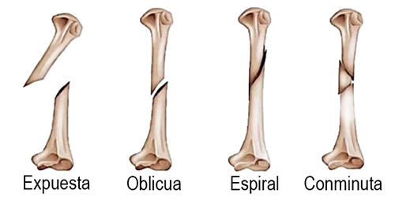
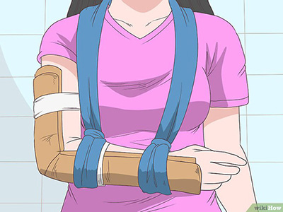

Fractura
Antes de continuar vea la nota sobre el uso de esta Guía.
Fractura o fisura:
Las fracturas o fisuras son causadas por accidentes, agresiones o movimientos bruscos, los síntomas más comunes son: dolor intenso, inflamación, entumecimiento, hormigueo e incapacidad de movimiento. En algunos casos se puede notar que la extremidad o articulación están visiblemente fuera de lugar, o incluso el hueso puede rasgar la piel y ser visible, en este caso será importane controlar una posible hemorragia.
Existen diversos tipos de lesiones en los huesos:

Muchas veces no se pueden detectar a simple vista a menos que se trate de una fractura expuesta. Las fracturas requieren de atención médica. Como primeros auxilios puede ser necesario entablillar la extremidad o parte del cuerpo dañada para poder transportar al herido. La inmovilización ayudará a que no se dañen más los tejidos cercanos.

Ejemplo de cómo entablillar un brazo utilizando cartulinas y hacer un cabestrillo con una venda. Para conocer más a fondo estos recursos es conveniente asistir a un curso de primeros auxilios.
Primeros Auxilios
Si usted debe transportar un herido a los servicios médicos podrá entablillar la extremidad dañada usando los materiales que tenga a la mano. Lo más recomendable es usar cartón, o unir varias hojas de papel hasta formar una estructura rígida. Con el cartón o papel formar una férula que puede fijar mediante prendas, trozos de tela, cintas o cinturones; cuidando de no presionar demasiado los tejidos. No fijar los amarres sobre la herida.
En caso de fracturas en los dedos se podrán entablillar usando una férula especial que puede incorporar a su botiquín de primeros auxilios.
El biomagnetismo solo se usará como herramienta complementaria para reducir la inflamación y el dolor (no sustitiye el uso de medicamentos) y en lo subsecuente como complemento a las terapias de rehabilitación.
Prevención
Vea la sección de prevención de accidentes